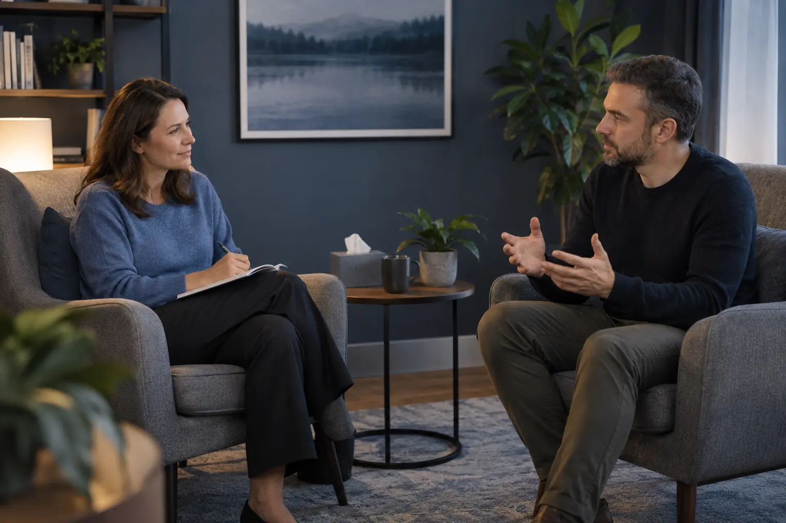

Psichologas, psichoterapija, porų ir šeimos konsultacija: skirtumai
Autorius: Madbeauty redakcija · Numatyta 2026 m. lapkričio 12 d. 10:00 (Lietuvos laiku)
Atskirkite specialistą, pagalbos procesą ir dalyvius, kad galėtumėte palyginti paslaugos apimtį ir sąlygas.

Trumpai: „psichologas“ nurodo, kas teikia pagalbą; „psichoterapija“ apibūdina pagalbos procesą ar metodą; „porų ar šeimos konsultacija“ nusako, kas dalyvauja. Šie apibūdinimai gali persidengti. Vien paslaugos pavadinimas neatskleidžia specialisto kompetencijos, susitikimų skaičiaus ar konkrečių sąlygų.
Šiame gide terminai naudojami paslaugų aprašams palyginti, o ne visiems Lietuvos profesijų pavadinimams ar paslaugoms priskirti vienodą teisinį statusą.
Trys skirtingi pasirinkimo klausimai
- Kas teikia pagalbą? Pasitikrinkite konkretaus specialisto išsilavinimą, profesinę kvalifikaciją ir patirtį, susijusią su siūloma paslauga. „Psichologas“ savaime nepasako, kokia konkreti pagalba teikiama. VASPVT nurodo medicinos psichologų licencijuojamos profesinės veiklos priežiūrą; tai nėra pagrindas teigti, kad visiems psichologams ar psichoterapijos paslaugoms taikoma ta pati tvarka. VASPVT informacija apie medicinos psichologų veiklos priežiūrą
- Koks pagalbos procesas siūlomas? Psichologo konsultacija gali būti aprašoma kaip atskiras susitikimas, o psichoterapija – kaip tam tikras pagalbos procesas ar metodas. Iš pavadinimo negalima spręsti, kiek susitikimų reikės ar kokio rezultato sulauksite. Lyginkite, ar aptariama pradinė konsultacija, tolesnis darbas, tikslų peržiūra ir paslaugos ribos.
- Kas dalyvauja? Individualioje konsultacijoje dalyvauja vienas žmogus, o porų ar šeimos formate numatomas daugiau nei vienas dalyvis. Iš anksto išsiaiškinkite, kas dalyvauja kiekviename susitikime: kartais pradinis pokalbis ar vėlesnis susitikimas gali vykti skirtinga sudėtimi. NHS aprašo individualius, porų, šeimos, grupinius ir nuotolinius konsultavimo formatus; tai formatų pavyzdžiai, ne Lietuvos paslaugų ar sąlygų standartas. NHS konsultavimo formatų aprašas
Kaip gali persidengti pavadinimai?
Pavyzdžiui, pasiūlymas „psichologo teikiama psichoterapija porai“ vienu metu nurodo teikėją, pagalbos procesą ir dalyvius. Tai trys atskiri dalykai, kuriuos verta patikrinti atskirai. Pavadinimas dar neparodo, kokią kvalifikaciją turi konkretus specialistas, kaip apibrėžiama paslaugos apimtis ar kokios taisyklės taikomos dalyvių informacijai.
Jeigu paslauga siūloma kaip sveikatos priežiūros paslauga, VASPVT pataria tikrinti ir įstaigos, ir specialisto licenciją, jos apimtį bei paslaugos teikimo vietą. Tai nėra automatinė licencijų taisyklė kiekvienai konsultacijai ar kiekvienam profesiniam pavadinimui. VASPVT sveikatos paslaugų teisėtumo patikra
Palyginimas pagal savo poreikį
Tarkime, žmogus nori individualiai aptarti savo situaciją, o partneriai svarsto kartu kreiptis dėl santykių klausimo. Pirmuoju atveju svarbu sužinoti, kokia individuali konsultacija siūloma ir kas ją teiks. Antruoju – ar teikėjas dirba su poromis, kas dalyvaus susitikimuose ir kaip bus tvarkoma kiekvieno dalyvio pateikta informacija. Jei pasiūlyme minima psichoterapija, papildomai išsiaiškinkite, kaip aprašomas procesas ir jo tikslai. Šis pavyzdys neparenka pagalbos ir nenustato diagnozės.
Ką išsiaiškinti prieš apsisprendžiant
- Dalyviai: ar susitikimai individualūs, porai, šeimai ar gali keistis jų sudėtis.
- Teikėjas: kokia jo konkreti kvalifikacija ir patirtis, susijusi su aprašyta paslauga; jei paslauga teikiama kaip sveikatos priežiūros paslauga, kokia licencija ir jos apimtis.
- Procesas: ar tai vienas susitikimas, ar siūlomas tęstinis darbas; kaip aptariami tikslai ir peržiūrima paslaugos eiga.
- Sąlygos: kaina, trukmė, nuotolinis ar gyvas formatas, atšaukimas ir konfidencialumo bei duomenų tvarkymo tvarka. Sąlygas tikrinkite pas konkretų teikėją.
Praktiškas pirmas žingsnis – užsirašyti, kas turėtų dalyvauti, kokį klausimą norite aptarti ir ar jums priimtinas vienas susitikimas, ar domina tęstinis procesas. Tada palyginkite konkrečių teikėjų atsakymus ir sąlygas. Nė vienas formatas savaime negarantuoja tinkamumo ar rezultato.
Susiję gidai
Šaltiniai
- NHS · konsultavimas · www.nhs.uk
- VASPVT · medicinos psichologų veiklos priežiūra · vaspvt.lrv.lt
- VASPVT · sveikatos paslaugų teisėtumo patikra · vaspvt.lrv.lt